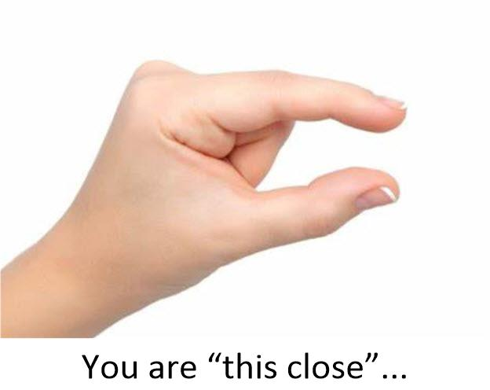

You know, there are many people out there in MM land that are running their own affirmation / prayer campaigns. And many are very enthusiastic about it. They give me reports on what is going on; what is working and what is falling apart.
And then when they are this close…

… they change their affirmations and it all comes falling apart.
What is going on, they ask me. Why is everything getting so close to happening and then it all seems to fall apart?
And I am going to talk about this particular issue right now.
Rule Number One
Do not change your affirmations.
You can tweak them. You can become more specific or broader. You can make them more colorful. You have change how your read them out. You can change the number of them, and their order.
But…
Do not stop them.
It is only until the affirmation is realized that you can stop. And then, only if you are 100% confident that the changes are permanent enough so that they will not dissipate as time goes one.
For instance…
I have an affirmation that goes like this…
I live in a beautiful area, that is calm, friendly, has fantastic colors and is very relaxed.
Now, I live in Zhuhai. It is indeed, calm, friendly. It has fantastic colors and is very relaxed.
But I still have it inside my prayer affirmations. Why? Well, this is simply because I do not want this to change. I am making sure that my life stays this way and is not displaced by future affirmations campaigns. So I keep it “active” in my affirmation campaigns.
That way, no matter what new campaigns I launch, this fundamental aspect of my life does not change.
Now consider this affirmation that I had last year…
My XXXX no longer YYYY and thus ZZZZ.
(Obviously this is a very personal affirmation. So I’m not going to throw out the details.) Anyways it materialized. In fact, it even surprised me! I was expecting a less than 10% chance of it actually occurring but, it really did.
I actually looked at XXXX and was amazed that what I saw. Even I was surprised, that exactly what I navigated to; a very unlikely world-line, actually materialized.
Now this is a one-shot deal. Once it’s done, it’s done. The affirmation is complete and I can cross it off from the list. It is over.
So that is what I did. It is now greyed out on my spreadsheet.
So rule one is this;
You continue your affirmation campaign using the previous campaign as a baseline. You then cross out or grey out those things that have either occurred or are no longer of interest to you, and you leave the ones that you are still striving for.
As well as leaving in the affirmations that has materialized, but that you do not want to disappear away.
Rule Number Two.
When you see things start to manifest, do not ASSUME that your goals are being realized.
They could be false positives, or any number of things.
Do not take the cake out of the oven until it is fully baked. The inside might still be doughy, and the cake might completely collapse when you take it out of the oven. If the recipe calls for 350 degrees for two hours, then you follow that recipe exactly. You do not say… “it looks like it is done” in the first one half hour of baking. Do you?
You sit down. You make yourself a cup of tea. You turn on a show and you wait it out. You know that when the oven goes “ding” that the cake is baked and you can take it out of the oven.
But… nooooooo!
Many people just can’t wait to take the cake out early. Most especially young cooks who don’t have the patience to let the things bake properly.
Let’s suppose you have an affirmation that looks something like this…
I have a long passionate relationship with a rugged mountain man, who has a cabin in the woods, likes poetry, drives a truck, and knows how to knit.
Then, one day you realize that this man who you are just starting to get to know (not yet dating, even) is a (sort of) “mountain man”, he does have a cabin in the woods. He does have a truck.
And so you assume that your affirmation has materialized.
No.
It has not.
Well, for starters, you don’t have a relationship with him (yet), and you don’t know if he knits, and your certainly do not have a “passionate” relationship either. All you see is a POTENTIAL, and that can mean absolutely nothing.
As we used to say in the United States, “do not count your chickens until they are hatched.”
“DO NOT COUNT YOUR CHICKENS BEFORE THEY ARE HATCHED.” ― Æsop Fables.
Definition of count one's chickens ( before they hatch ) -usually used in negative statements to mean that someone should not depend on something hoped for until he or she knows for certain that it will happen
People who count their chickens before they are hatched act very wisely because chickens run about so absurdly that it’s impossible to count them accurately. ― Oscar Wilde.
Never count your chickens before they’re hatched.
-Do not count your chickens before they are hatched
If you do in an affirmation campaign, you could easily terminate something that is going ahead according to plan, but your impatience will ruin the entire sequence of events. Some things need time to cook.
So rule two is this…
It isn't over until the fat woman sings.
You keep on doing the affirmations, and running your campaigns until every single aspect of your desires come true. Do not assume that you are close to realizing them. Do not assume that they will manifest "any day now".
If you order a pizza to eat in a restaurant, you cannot tell others that "you ate pizza in the restaurant" until AFTER [1] you were served the pizza, [2] ate the pizza to [3] your satisfaction, [4] paid for the pizza, and then [5] left the establishment.
Rule Number Three
Do not concentrate on the material aspects of your affirmations. Concentrate on the ultimate end goals.
- Instead of an affirmation campaign for a Dior gown, how about concentrating on a gown that fits you perfectly, is comfortable, and that looks stunning on you.
- Instead of a campaign that asks for one thousand dollars in your wallet. Ask about having a wallet that always has enough cash for you to live life in the way you see fit.
- Instead of asking for the ability to win at every sports game you play, how about asking for you to play games where you are always comfortable and satisfied with the game and the outcome.
Rule three is…
Always concentrate on the end result.
Often this is the emotions that you anticipate you will have if your goals are achieved. Focus always on the end game, not on the details.
Does it matter what color your beloved pet is? All that matters is that you and your beloved pet are happy together.
Rule number four
Nothing works until you have a “pause” in your affirmation campaign.
I have repeatedly stated this over and over, and yet… still… people are running long prayer campaigns without a break. People(!) you do not wind up a toy continuously without letting the spring unwind. What is the purpose of obtaining six PhD degrees if you cannot apply your knowledge? Why work at a job that you hate, if they are not going to pay you?
A campaign requires two sections. The first section is the verbal affirmation phase, and the second section is an equal period of letting the affirmations run their program.
Rule four is…
Conduct your campaign, and then stop all affirmations for an equal amount of time.
Actually, the rest period can be shorter, but that is another subject for advanced students. In general, keep to the basics and do not deviate from it.
Rule Five
Everything is interconnected.
You cannot isolate a certain action in an affirmation campaign and expect it to manifest alone. There will always be other things that will move and happen associated with your affirmation.
Suppose that you have a tree in your front yard. And for reasons that I don’t understand, you will to get rid of that tree. So you cut it down. The good news is that you no longer need to rake the leaves in the fall, and mow around the tree trunk. Yay! But the bad news is that your Summer electricity bill has doubled, as the sun is not hitting the side of your house directly, and is no longer being blocked by the leaves on the tree.
Your goal was realized, but other things occurred that might not be to your liking.
I argue that you should try to be as helpful and positive as possible in your affirmation campaigns. Remember that if you try to change something, get rid of something, alter something, that those changes will come with associated other events. Some of which might be welcome. Some not so much, and others might end up being a complete surprise.
Do not not place contradicting affirmations in your prayer campaign.
Rule five is…
Affirmations do not work in isolation. They work together with other intentions. And what ever intentions you had in your past, and will have in your future will be tied and influenced by the affirmations you make now.
Therefore, always strive to place good, happy and benevolent affirmations in your campaigns, least undesirable situations manifest.
Rule Six
There is no such thing as time.
Time is a construct to help us sort out things as they occur. It is the observed movement of your consciousness through the MWI. That’s all.
What you prayed for when you were seven years old has just as much power as what your affirmation campaign has right now. As well as what you will be praying for in the future.
To maximize the strength of your affirmations you need to be specific regarding them, but general on the outcome manifestation.
Long time readers will confirm that the more “unique” and “special” the affirmation is, the quicker it apparently seems to manifest. While other long-time, long-duration desires just seem to “hang there” and move really slowly.
This rule…
There is no such thing as time. In order to prevent negative past prayer campaigns, or future campaigns from influencing your current campaign, you must do either one of two things.
[1] Add an affirmation that prevents the influences of other prior or future affirmations.
[2] Make sure that your campaigns are broad scoped and will not have any negative consequences associated with them.
Oh, by the way, I use this affirmation in my campaigns…
These intention prayers supersede any and all previous ones that would conflict with the ones listed here.
And this one…
Any previous actions, statements or affirmations that I have made in my past, that will have a contrary effect on my current affirmation prayer campaign, are ignored and does not influence my current affirmation campaign.
Some thoughts…
Sometimes we are our worst enemy. We try to take control over a system that is working.
It’s like a drunk guy in the back seat of a car, who insists on driving the car. The rest of the passengers know that he will probably drive off the road and wreck the car, but he’s too big and powerful to subdue.
Follow the script. Do not deviate, and accept things as they manifest. Do not try to take control. Never try to take control. Just let the events unravel and manifest.
And NEVER, never, ever take the pizza out of the oven before the dough is properly cooked, the cheese is melted, and the meat is well cooked. No matter how good it smells, and no matter how delicious it looks, do NOT take it out until the timer goes off!
Finally
I have a couple of videos that I would like to throw out to the MM audience. I took it earlier this week. It just shows a few minutes of my life.
Now, you realize that I did not say in my verbal affirmations “I will live in JiDa, Zhuhai, China and have a great life“. I said; “I live good healthy life in a beautiful, calm and relaxed place.”
When I left the United States, I landed in Erie, Pennsylvania after prison. It was also calm and pleasant. It was in late August into September, and a rather nice time of the year. I could have stated “Yeah, it has materialized.“
But no. It really didn’t.
Erie looked and appeared to be beautiful. But for me it was not “calm and pleasant”. For me it was a scene of constant and perpetual stress. Try living in the USA as a “sex offender”. That was not “calm and relaxed”. It is a forever stress that you learn to deal with. Miss one reporting date, get one traffic violation, get snagged on laws that were constantly changing, and your life is toast.
And due to the local Pennsylvania laws, I wouldn’t be living in the “nice section”. I would either live far away in the woods outside of town, or in the “bad section”. I would have to live on the East Side of Erie.
But I did not accept Erie as the result of my affirmation prayers.
You see, an affirmation prayer campaign is a very personal thing. What is beautiful and stress free for me might mean something else to a different person. And for me, I really wanted a nice, calm and beautiful place to live in.
Not one in a urban ghetto where I was constantly on the alert.
Indeed, I didn’t take the pizza out of the oven until it was cooked.
It took me to Shenzhen, Hong Kong, Pago Pago, TangXia in Dongguang, and finally to where I live now in Zhuhai.
The first movie is all about the pace of life during lunchtime in China. You can see it HERE. 101MB.
The second movie is about the importance society places on the living environment, but it still is 180MB, and I talk about trees and parks. If you all think that trees aren’t important, maybe you might find this a tad boring. But I do want you all to see what my verbal affirmations manifested for me. You can see this video HERE. 180MB. Notice how calm and peaceful everything is.
The point here is that what makes a person realize their dream is something personal. You cannot use television, movies or stories to illustrate it. You must use what you find most desirable in your life and emphasize that as a core requirement of your goals. And you should NEVER abort the process early when you think you see “light at the end of the tunnel”. You stick to your plans, and continue walking the walk.